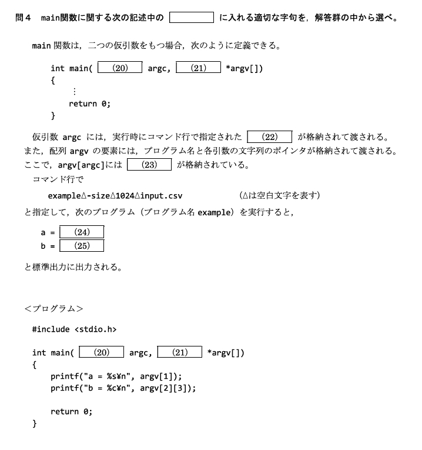
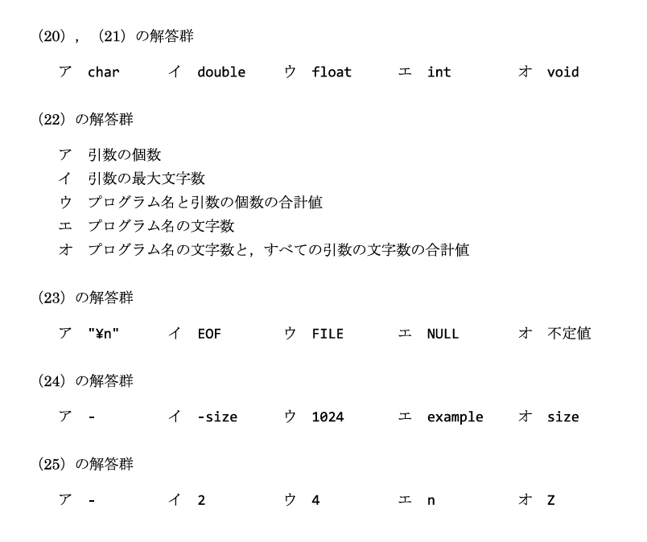
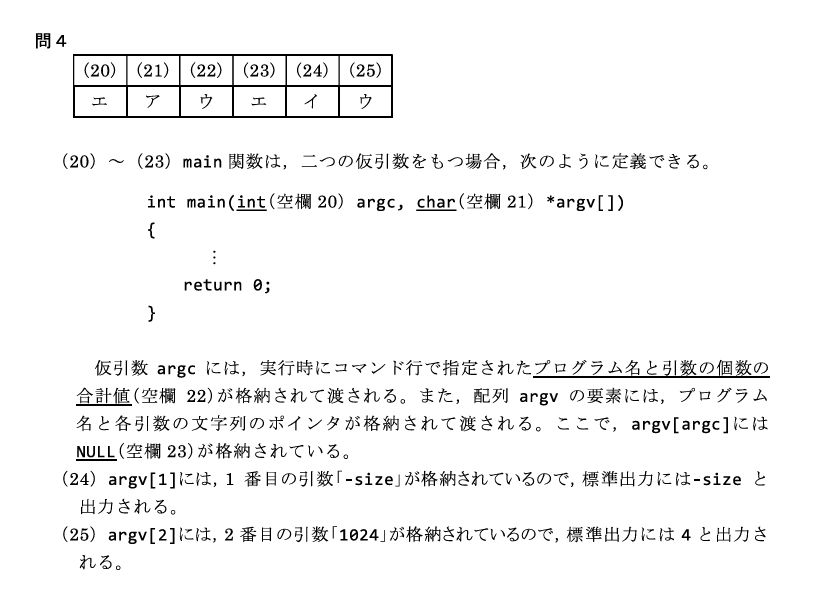

プログラムは処理を 関数 という部品に分けて組み立てる。C言語では実行が必ず main 関数から始まり、main は実行時に外部から コマンドライン引数 を argc / argv で受け取れる。2級ではユーザー定義関数の3パターン（戻り値・引数の有無）と、argc・argv の中身がよく問われる。
main の argc（プログラム名を含む個数）・argv（argv[0]＝プログラム名、argv[argc]＝NULL）を正しく読める。
関数は、いくつかの処理を ひとまとめにした部品 である。特定のタスクを行うコードを関数に分けておくと、同じ処理を使い回せて、修正やテストもしやすくなる。
| メリット | 内容 |
|---|---|
| 再利用性 | 同じ処理を複数箇所で使い回せる。 |
| 読みやすさ | プログラム全体を小さな部品に分けることで理解しやすくなる。 |
| メンテナンス性 | 修正が必要なとき、その関数を直すだけで済む。 |
| テストの容易さ | 関数単位で動作を確認できる。 |
戻り値の型 関数名(引数リスト)
{
/* 処理内容 */
return 戻り値;
}関数は「戻り値の有無」と「引数の有無」の組み合わせで書き分ける。戻り値が無い関数は型を void にする。
#include <stdio.h>
int add(int a, int b)
{
return a + b;
}
int main(void)
{
int result;
result = add(3, 5); /* result に 8 が格納される */
printf("%d¥n", result);
return 0;
}int 型の値を返す。int a と int b の2つを受け取る。void printHello(void)
{
printf("Hello, World!¥n");
}呼び出しは printHello(); とする。戻り値が無いので void、引数も無いので (void) と書く。
void printNumber(int num)
{
printf("Number: %d¥n", num);
}呼び出しは printNumber(42);。これで Number: 42 が出力される。
void は「型が無い／値を返さない」という意味。void 関数は値を返さないので、x = printHello(); のように戻り値を受け取ることはできない。
main 関数は C プログラムの エントリーポイント（入口）である。プログラムの実行は必ず main から始まる。
int main(int argc, char *argv[])
{
/* 処理内容 */
return 0;
}int：main の戻り値の型。通常は実行結果を表す数値（正常終了なら 0）を返す。int argc：コマンドライン引数の 個数。char *argv[]：コマンドライン引数の 文字列の配列。int main(void) と書く。コマンドライン引数を受け取りたいときだけ int main(int argc, char *argv[]) の形にする。
プログラム名のうしろに付けて渡す値を コマンドライン引数 という。main はこれを argc と argv で受け取る。
| 名前 | 意味 |
|---|---|
argc | 引数の 個数。プログラム名を含む。最小値は 1（プログラム名のみ）。 |
argv[0] | プログラム名。 |
argv[1] 以降 | 渡されたコマンドライン引数（文字列）。 |
argv[argc] | 配列の末尾を示す NULL。 |
./example -size 1024 input.csv次のように実行すると、各値は下表のようになる。
| 要素 | 中身 |
|---|---|
argc | 4 |
argv[0] | "./example"（プログラム名） |
argv[1] | "-size" |
argv[2] | "1024" |
argv[3] | "input.csv" |
argv[4] | NULL |
argc は プログラム名を1個として数える。だから「引数を2つ渡した」なら argc は 3。argv[0] は必ず プログラム名。実際の引数は argv[1] から。argv[argc]（最後の要素）には、引数の末尾を示す NULL が入る。
コンパイルしてできる実行ファイルの「呼び方」は OS によって違う。
| OS | 実行のしかた | 例 |
|---|---|---|
| Windows | 拡張子 .exe を付けて実行する。 | example.exe |
| Linux / Unix / macOS | 拡張子は不要。カレントディレクトリの実行ファイルは先頭に ./ を付ける。 | ./example |
#include <stdio.h>
int main(int argc, char *argv[])
{
if (argc < 3) {
printf("Usage: example.exe <arg1> <arg2>¥n");
return 1;
}
printf("Arg1: %s¥n", argv[1]);
printf("Arg2: %s¥n", argv[2]);
return 0;
}この例では、引数が足りない（argc < 3、つまり引数が2つ未満）ときに使い方（Usage）を表示して return 1; で終了している。
Windows 環境では cl.exe（Microsoft の C コンパイラ）でコンパイルする。
cl.exe example.cこれで example.exe という実行ファイルが生成される。引数を渡して実行すると：
example.exe hello world出力結果：
Arg1: hello
Arg2: worldreturn 1; は「エラーで終わった」ことを OS に伝える合図。正常終了は return 0;。引数チェックに失敗したときに 0 以外を返すのが定石。



void。引数が無いときは (void)。main から。コマンドライン引数を使うなら int main(int argc, char *argv[])。argc＝引数の個数（プログラム名を含む）、argv[0]＝プログラム名、argv[argc]＝NULL。.exe、Linux 等は ./。コンパイルは cl.exe ファイル名.c。